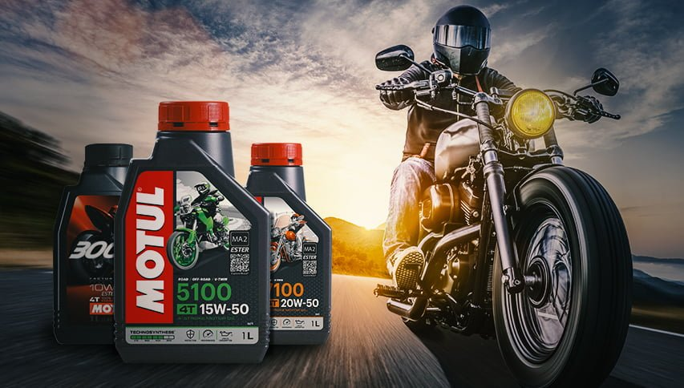

Don't Miss This Offer! Motul — the official oil of MotoGP is now available at special prices. Trusted by world-class riders.
Motul is a world-renowned French lubricant brand founded in 1853, with over 170 years of expertise in engine oil technology. Known for pioneering 100% synthetic ester-based oils, Motul has been the trusted choice of professional racing teams, MotoGP riders, and everyday riders across 160+ countries. From the racetrack to the road, Motul delivers unmatched engine protection, superior performance, and long-lasting durability. Their flagship products — including the 300V, 7100, 5100, and 8100 series — are approved by leading manufacturers such as BMW, Mercedes, Porsche, Nissan, and Yamaha. As the official lubricant partner of MotoGP until 2030, Motul continues to push the boundaries of innovation, ensuring your engine performs at its peak — whether you're racing on the track or riding through the city. Choose Motul. Choose Performance.

🏍️ Motul is a French premium lubricant brand founded in 1853, renowned for its high-performance motorcycle oils like the legendary 300V and 7100 series. Their ester-based synthetic oils provide superior engine protection, smoother gear shifts, and extended drain intervals for all types of bikes. For optimal performance, always pair Motul oil with a compatible oil filter to ensure clean circulation and maximum engine life.
⚙️ Motul's advanced 4T motorcycle oils are engineered with JASO MA2 certification, ensuring wet clutch compatibility and reduced friction. Whether you ride a commuter, sportbike, or cruiser, Motul delivers consistent viscosity and thermal stability for peak engine performance.